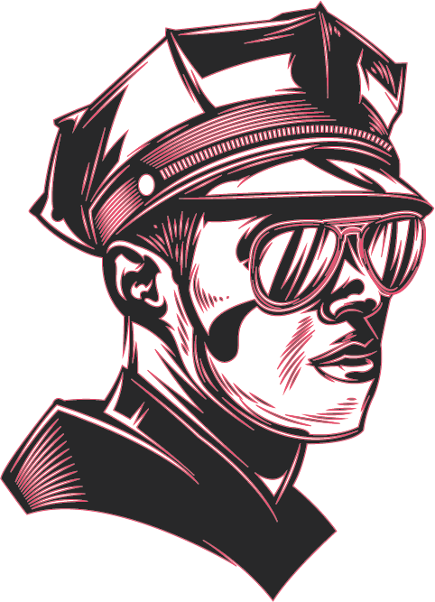

<page-header (menuClicked)="sideNav.toggle()"></page-header>
<div class="top-bar">
  <!-- <div class="logo">
    
  </div> -->
  <div class="top-routes">
    <div class="searches">
      <a routerLink="/dash/dashboard" routerLinkActive="active"><mat-icon>dashboard</mat-icon><p>Dashboard</p></a>
    </div>
    <div class="searches">
      <a routerLink="/case/Outcome"><mat-icon>book</mat-icon><p>Case Outcome</p></a>
    </div>
    <div class="searches">
      <a routerLink="/assign/assigns"><mat-icon>drag_indicator</mat-icon><p>Assign Case</p></a>
    </div>
    <div class="searches">
      <a routerLink="/cell/cells"><mat-icon>open_with</mat-icon><p>Cell</p></a>
    </div>
    <div class="searches">
      <a routerLink="/court/all-court"><mat-icon> store_mall_directory</mat-icon><p>Court</p></a>
    </div>
    <div class="searches">
      <a routerLink="/search/searchs"><mat-icon>search</mat-icon><p>Search</p></a>
    </div>
    <div class="searches">
      <a routerLink="/profile/details"><mat-icon>perm_identity</mat-icon><p>profile</p></a>
    </div> 
  </div>
  
</div>
<mat-sidenav-container>
  <mat-sidenav mode="side" #sideNav opened class="mat-elevation-z6">
    <side-nav></side-nav>
  </mat-sidenav>
  <mat-sidenav-content>
    <router-outlet></router-outlet>
  </mat-sidenav-content>
</mat-sidenav-container>
